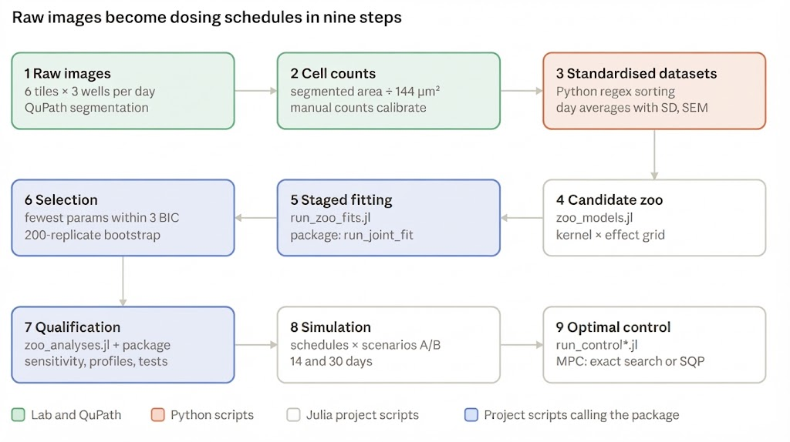

Honors Thesis Skeleton — From Culture to Control
| Thesis section | Source material | Status |
|---|---|---|
| 1 Introduction | methods.pdf pp. 1–4 | Drafted |
| 2.1 Experimental methods | methods.pdf pp. 6–8; Experimental Plan Fall 2026.docx | Drafted |
| 2.2 Modeling framework | Final Report Ch. 2 header, Ch. 3–5 method boxes, Ch. 6–7 model boxes | Drafted |
| 3.1 Experimental dynamics | Final Report Ch. 1 (New Data Report) | [Now] |
| 3.2–3.6 Model identification | Final Report Ch. 2; zoo_model_selection.csv, zoo_parameters.csv | [Update] |
| 3.7–3.8 Qualification | Final Report Ch. 3–5; outputs/zoo_analyses/*.csv | [Update] |
| 3.9–3.10 Simulation and control | Final Report Ch. 6–7; outputs/control, outputs/control_30d | [Update] |
| 3.11 Method comparison | NN track verdict/report.html; archive_time | [Pending] |
| 4–5 Discussion, limitations | Final Report Ch. 6 "What the data do not identify" | [Pending] |
Front matter
Title options
From Culture to Control: Staged Mechanistic Modeling and Optimal Dosing of Cisplatin-Sensitive and -Resistant Ovarian Cancer Cells and a Transportability Study Between Stages.
Abstract [Write last; about 300 words, one sentence per item]
Problem: resistance after platinum therapy; adaptive therapy needs measured, not assumed, competition and drug parameters.
Gap: models are rarely identified across systematically more complex conditions, and parameter transportability is assumed.
Experiments: A2780/A2780cis in monoculture and coculture (1:3, 1:1, 3:1), normal and low resource (0.5% FBS), with cisplatin at 0.62–1.47 µM, imaged for 14 days.
Framework: an autonomous compartment-model zoo, fitted in six stages with the fewest-parameters-within-3-BIC rule, in a Julia package.
Key identification result: one sentence on the Stage 4 transportability failure (ΔBIC {+70}) and what ε means.
Qualification: bootstrap stability, identifiability ({4} of {23} not fully identifiable), held-out prediction error.
Control: MPC schedule vs constant dosing, with the headline numbers for cancer burden and cumulative dose.
Comparison: mechanistic vs UDE/NN in one sentence.
Significance: one sentence.
Other front matter: acknowledgments, table of contents, list of figures, list of tables, list of abbreviations (LR, Ce0, Ce1, MPC, BIC, UDE, S/R, IC25/IC50/IC75), list of symbols (Appendix A is the full parameter table).
1 Introduction
1.1 Ovarian cancer and platinum resistance Drafted
Ovarian cancer provides a particularly compelling system for mathematical modeling. High relapse rates following platinum-based chemotherapy, such as cisplatin, suggest resistance dynamics play a central role in disease progression. Given ovarian cancer is the fifth most common cause of cancer death in women, with approximately 80% of patients relapsing with resistant disease within 18 months, it also has high clinical impact (Luvero et al., 2014).
Cisplatin mainly works by triggering DNA-damage and apoptosis responses, which tumors can evade through multiple resistance routes (Galluzzi et al., 2012). The development of the preferable cisplatin-resistant trait, like many evolved phenotypes, is subject to trade-offs (Shoval et al., 2012). However, under certain environmental conditions, generalist populations may be beaten out by specialist populations with greater flexibility (Gatenby & Brown, 2020). This greater flexibility may entail other fitness costs, such as a reduced proliferation rate.
1.2 Competition, fitness costs and adaptive therapy Drafted
Evolutionary modeling has demonstrated that resistant cells may incur a fitness cost in drug-free environments, allowing sensitive cells to competitively suppress resistant populations (Strobl et al., 2021). This insight forms the basis for adaptive therapy: rather than attempting to completely remove the tumor, treatment may strategically maintain a population of drug-sensitive cells to suppress resistant clones. Systemic cancer treatment has traditionally been built upon the principle that administering a maximum tolerated dose (MTD) will eradicate malignant cancer cells and cure the disease. Unfortunately, many platinum-based chemotherapies fail and result in a drug-resistant tumor through the selection of drug-resistant subclones (Gatenby & Brown, 2020). Adaptive therapy takes advantage of the fitness costs incurred by drug-resistant cancer cells when treatment is absent by reducing drug doses or introducing treatment holidays (Zhang et al., 2017; Hockings et al., 2025). By maintaining a population of sensitive cells, the growth of a resistant population can be suppressed while controlling overall tumor size.
In recent studies, low-resource conditions have also been shown to cause a selective decline of resistant subpopulations (Obrist et al., 2018). Limiting resources may enhance competition and suppress resistant subpopulations while maintaining manageable sensitive populations. The resulting apoptosis and reduced proliferation rates suggest that limiting access to nutrients may provide another mechanism for long-term tumor control. Newer papers also present models incorporating transitions between sensitive, resistant, and drug-tolerant cells. This complication may make coculture experiments difficult to accurately interpret. Labeling a sensitive cell at the beginning of an experiment may not represent a fixed phenotype if cells acquire resistance over multiple generations of reproduction. Similarly, resistant cells may revert if there is no selective pressure. Papers have represented this switching phenomenon through multicompartmental models of sensitive-like or drug-tolerant cells (Gevertz et al., 2025). Incorporating the fitness cost of resistance in a tumor and transitions between cellular states may provide a stronger mathematical basis for determining how other effects mechanistically alter resistant and naïve cell populations. Given that we often cannot identify cellular resistance beyond the initial labeling, these modeling effects are interpreted rather than assumed biological events.
1.3 Mechanistic models and the identification problem Drafted
Modeling cancer growth remains challenging due to the large number of interacting biological mechanisms that shape population dynamics. Tumor growth is influenced by density dependence, cell-state transitions, drug pharmacodynamics, ecological competition, resistance costs, stochasticity, and microenvironmental feedback. Across the literature, different modeling techniques utilize subsets of these mechanisms. Studies adopt pharmacodynamic approaches incorporating Hill-type drug-response terms derived from experimental dose-response curves (El-Kareh & Secomb, 2003). Other studies focus on techniques from classical mechanistic modeling grounded in population ecology and differential equations, such as logistic growth and competition interactions in coculture systems. Although mechanistic modeling approaches are often presented separately, many produce similarly accurate explanatory fits across experimental datasets. Similar growth suppression can be modeled with different biological mechanisms. A reduction in population growth may arise from density-dependent proliferation, treatment-induced arrest, or coculture competition. Therefore, the central modeling challenge is not just selecting an equation that fits observed cell counts but determining the necessary biological mechanisms across controlled perturbations.
Exploiting these biological features requires a modeling framework capable of distinguishing whether dynamics arise from competitive resistance, phenotypic plasticity, delayed damage response, Allee effects, density-dependent growth, or pharmacodynamic kill terms. Many published studies test only a limited subset of these mechanisms. Other approaches emphasize death-term modifications, Allee-type dynamics, cell-state transitions, or damage-repair processes. Yet few attempts have systematically compared broad families of models under unified experimental conditions. The central problem, therefore, is not simply identifying new mechanisms, but determining which mechanisms dominate observed population dynamics under defined experimental conditions.
1.4 Parameter transportability Drafted
Various biological models accurately explaining individual experiments are inadequate for establishing underlying biology. A stronger test is whether parameters inferred under one experimental condition remain predictive when applied to different, but related, conditions that were not used during fitting. Hierarchical fitting assumes that previous parameters remain important through increasingly complex experiments. However, this assumption may not always be held. In an untreated monoculture, for example, the growth rate and carrying capacity could require a different mathematical representation under a low-resource condition. It also seems reasonable that coculture effects could be altered by treatment effects. Therefore, appropriate fitting should test both hierarchical fitting and stage skipping.
This leads to two competing methods. Fitting parameters under every experimental condition could improve explanatory fit but may incorporate mechanisms that are no longer important. In contrast, fitting parameters at key experimental conditions could maintain both explanatory fit and mechanistic interpretability. This leads to the central questions: which parameters should be carried through conditions, and which should change when the environment changes? Furthermore, when producing simulations, toggling between models in different conditions may be valuable, especially for dynamic environments such as a patient's physiological condition over a year.
1.5 Optimal control of treatment Drafted
Many treatment schedules currently utilize maximum tolerated dose with the goal of tumor elimination. This is meant to maximize the delivered drug to the tumor site. However, recent research has indicated that MTD may not optimize long-term treatment benefits, especially in cancers with high relapse rates such as ovarian cancer (Gatenby & Brown, 2020; Hockings et al., 2025). Reducing treatment intensity or introducing treatment holidays in adaptive therapy schedules may help delay resistant tumor growth and reduce treatment side effects. Optimal control provides a framework based on control theory that allows these objectives to be formalized. Rather than optimizing only one result, objective functions can simultaneously penalize cell resistance, tumor burden, and drug toxicity. The resulting treatment schedule reflects a balance among these parameters. The quality of optimal control is directly dependent on the validity of the dynamic models it uses. Typically, these models are semi-mechanistic because they are intended to capture the most important growth and suppression factors (Moore, 2018). This is why it is important to identify the most prominent mechanisms and properly evaluate parameter identifiability and parameter transportability before optimization.
1.6 Mechanistic versus data-driven models Pending
UDEs and neural ODEs as a competing route (Rackauckas et al., 2020; Brunton et al., 2016); one paragraph on each trades.
1.7 Aims and contributions Drafted
This thesis proposes a unified modeling framework to systematically evaluate competing mechanistic hypotheses in ovarian cancer growth. Using untreated and treated monoculture datasets, as well as coculture competition experiments under treated, untreated, and low-resource conditions, this work develops and implements modular infrastructure capable of:
Generating multiple classes of tumor-growth models, including logistic, theta-logistic,, Hill-based pharmacodynamic, damage-repair, sensitive-resistant competition, delay, accumulation and transit-chain models.
Standardizing parameter definitions and observation models across model classes.
Fitting candidate models across multiple experimental conditions and initial densities.
Comparing model performance and parsimony using consistent statistical criteria such as BIC.
Evaluating parameter sensitivity, identifiability, trade-offs, transportability, and predictive performance.
Performing optimal control to identify the best dosing schedules for maintaining tumor size within a given barrier boundary.
Interpreting the resulting biological implications for adaptive therapy and optimal control.
Rather than proposing a single “correct” model, this framework evaluates how increasing mechanistic complexity alters explanatory power and predictive stability. In doing so, ovarian cancer modeling becomes a test case for a broader question in systems biology: how can complex biological mechanisms be modularized, compared, and integrated within a unified computational architecture?
This approach was implemented through a Julia package that simplifies the process of model comparison and analysis. The package is intended to be adaptable and extend beyond ovarian cancer growth modeling.
By reducing the infrastructural barrier to systematic model comparison, this package enables future researchers to test mechanistic combinations without rebuilding simulation infrastructure from scratch. The major aim of this thesis is therefore to develop modeling infrastructure capable of analyzing varying mechanisms of ovarian cancer growth across a complex system of experimental conditions and models to reach new biological insights.
1.8 Thesis outline Drafted
This thesis follows staged progression from experiment to control. Experimental measurements of sensitive and resistant cancer populations are first used to identify the models within 3 BIC of the lowest BIC models capable of explaining population dynamics with the fewest free parameters. These models are then qualified through uncertainty, sensitivity, identifiability, transportability, and predictive-validation analyses. Qualified models are subsequently used to simulate treatment and environmental perturbations and ultimately to evaluate treatment schedules through optimal control. Mechanistic models are additionally compared with time-based and data-driven alternatives. Ultimately, this paper will create an infrastructure that can take growth data and produce possible dosing schedules using optimal control theory while doing a case study on A2780 and TykNu cells.
2 Methods
Methods are broken into two parts for readability. There is a section for collecting data and a separate section for the mathematical framework.
2.1 Experimental methods
2.1.1 Cell lines Drafted
To study how low-resource environments affect heterogeneous cancer growth during cisplatin treatment, two pairs of cell lines were used: A2780 sensitive / A2780cis resistant and TykNu sensitive / TykNu-cpr resistant.
Sensitive and resistant classifications refer operationally to the origin and experimentally labeled cell populations. Because phenotypic transitions were not directly measured, cellular resistance beyond the initial labeling was not assumed to represent an immutable phenotype.
The object of this paper is not only to quickly find the optimal dosing schedule for future patients of human ovarian carcinomas (A2780) but also to create a pipeline that allows scientists to run optimal control upon many different resistant cancers. The TykNu cell line provides a validation method for the pipeline to ensure the pipeline has enough flexibility to at least cover different types of ovarian cancers.
2.1.2 Culture and plating Drafted
Both sensitive cells and resistant cells were seeded separately in 24-well plates with three replicates per condition (n=3).
A2780/A2780cis cells were seeded at initial densities of 20,000 and 30,000 cells/well, while TykNu/TykNu-cpr cells were seeded at initial densities of 30,000 and 40,000 cells/well to compensate for slower growth.
On Day −1, cells were seeded into plates with normal media containing 10% FBS, 1% penicillin-streptomycin, and 1% L-glutamine. RPMI 1640 was used for A2780/A2780cis cells, while EMEM was used for TykNu/TykNu-cpr cells.
A controlled mixing phase was used during seeding to promote homogeneous distribution and attachment to the well surface. Cells were maintained in a standard humidified incubator at 37°C with 5% CO₂. Media was refreshed every two days.
2.1.3 Experimental conditions Drafted
Untreated monoculture
Sensitive and resistant cells were grown separately under normal-resource conditions (as described in 2.1.2) to establish baseline growth dynamics.
Low-resource monoculture
Twenty-four hours after plating, on Day 0, normal media were replaced with media containing 0.5% FBS to simulate a low-nutrient environment. Every subsequent media change used 0.5% FBS-supplemented media.
The procedure was later repeated at 30,000 cells/well for A2780/A2780cis and 40,000 cells/well for TykNu/TykNu-cpr to determine whether the observed behavior remained consistent across experiments.
Untreated and low-resource coculture
In coculture, the sensitive and resistant subclones were seeded together in a 24-well plate with three replicates at three different initial sensitivity ratios.
Ratios of 1:3, 1:1, and 3:1 sensitive:resistant cell counts were used.
As in monoculture experiments, cells were initially seeded under standard media conditions. Untreated coculture experiments remained under normal-resource conditions. For low-resource experiments, media were changed after 24 hours to 0.5% FBS-supplemented media and replaced with low-resource media every other day thereafter.
Cisplatin-treated conditions
Cisplatin-treated monoculture experiments were used to characterize treatment responses in sensitive and resistant populations. Cells were exposed to cisplatin under normal-resource conditions at concentrations corresponding to the IC25, IC50, and IC75 treatment groups used in this study. IC25 indicates that 25% of the cells are viable.
The concentrations were 1.47 µM, 1.0 µM, and 0.62 µM cisplatin, respectively.
Low-resource + cisplatin coculture
For the combined low-resource and cisplatin coculture condition, the sensitive and resistant subclones were seeded together using the same coculture structure described above.
A2780/A2780cis cells were seeded at a total density of 30,000 cells/mL, while TykNu/TykNu-cpr cells were seeded at 40,000 cells/mL. A ratio of 1:1 sensitive:resistant cell counts were used over a 14-day experimental period.
Cells were initially plated 24 hours before Day 0 using standard media containing 10% FBS, 1% L-glutamine, and 1% penicillin-streptomycin. RPMI 1640 was used for A2780/A2780cis cells, while EMEM was used for TykNu/TykNu-cpr cells.
Twenty-four hours later, on Day 0, the media were changed to 0.5% FBS-supplemented media containing cisplatin. For A2780/A2780cis cocultures, the treatment media contained 1.0 µM cisplatin in RPMI. For TykNu/TykNu-cpr cocultures, the treatment media contained 0.66 µM cisplatin in EMEM.
Media were changed every two days using the same low-resource plus cisplatin formulation, and cell images were collected daily throughout the 14-day experiment.
2.1.4 Imaging Drafted
TxRed and FITC channels were used to image sensitive and resistant cells, respectively. Multiple microscope lighting settings were used because subsets of cells were visible under different settings for different wells; however, settings were never adjusted across time points within an experimental condition.
Exposure time for each experimental condition was determined on the first day of imaging and kept consistent throughout the duration of the experiment. For the TxRed channel, an exposure time of 250 ms was used. For the FITC channel, an exposure time of 25 ms was maintained.
For each well, six images were acquired, with triplicates collected for each condition beginning one day after initial plating. Images from each well were averaged to obtain daily values.
Following image acquisition, fluorescent labeling was used to enhance contrast, and cell segmentation was performed using QuPath with a defined intensity threshold of 2000–6500. Images collected under identical exposure conditions were batched together for QuPath analysis to ensure consistent segmentation.
The background radius was maintained below 30 µm, median filter radius between 0.5 and 3, sigma between 0.5 and 2.5, and object area between 10 and 700 µm². (ADD A PICTURE WITH SETTINGS IN SUPPLEMENTARY)
An internal QuPath SOP developed by the author was used to automate the process (LINK IT). To use it appropriately, you must remove ALL photos from the folder that you do not want to analyze.
2.1.5 Cell quantification Drafted
At early time points, days 2–4, cells were manually counted within a defined area to calibrate the automated analysis. Total segmented areas were divided by the manually counted number of cells to estimate average cell area.
A supplementary experiment spanning days 1–4 used the same manual-counting approach to confirm that average cell size remained approximately constant over time. Cell size converged near 144 µm² (ADD SUPPLEMENTARY VIOLIN PLOTS).
Once cell size was verified to be time-invariant over the calibration period, the calibrated cell size and segmentation parameters were applied during batch image analysis. Estimated cell count was calculated as:
In total, 18 images per condition per day were analyzed.
2.1.6 Data processing and quality control Drafted
Data extraction required organizations to ensure that well averages were appropriately calculated. Python scripts using regular-expression differentiation functions were employed to organize wells into files corresponding to their experimental conditions.
First, data were differentiated by cell density. Data were subsequently organized according to treatment conditions where applicable, such as IC25, IC50, and IC75, and were then separated by resistance status. Each time data was divided, a renaming scheme ensured that well names were appropriately formatted, and that unnecessary microscope naming conventions were instead represented through directory paths.
Once a directory contained only a specific experimental condition, regex parsing was used to group wells by number or letter. Six image tiles for each triplicate were averaged, and a day column was added. Statistical columns were appended to preserve variance information, producing tables containing Day, Well, Tile Count, Mean Cells, SD Cells, and SEM Cells.
These sample-level averages allowed individual well growth to be assessed in the event of unique variance patterns between wells. Reducing the data into simple daily-average files improved reproducibility, computational speed, and readability.
The resulting directory structure followed:
Dataset → Density → Resistance → Averages
Backups of the original datasets were retained throughout this process. Newly organized files were stored in subdirectories while original CSV files remained in their parent directory. This enabled manual verification of each sorting step before additional processing.
Each final day-average file represented 18 image tiles across triplicates for an image area of 0.632533 mm². Attempts were made to normalize counts to the full well or to a constant number; however, both normalization approaches reduced numerical stability. The measured scale was therefore retained. This ensured we could manually validate data that was being appropriately processed, as well as look back at data that may look suspicious. This research highly recommends future scientists do the same with their data.
2.2 Modeling framework
2.2.1 Computational pipeline and package Drafted
This project has a 9-stage process that utilizes a wealth of packages as well as GrowthParameterEstimation.jl, an author created package. This workflow was meant to make a seamless pipeline for automating the steps from collecting images to producing results while maintaining enough modularity to be used across experiments.
Stages 1 and 2 of analyzing images for cell counts occurred in QuPath and are described in sections 2.1.4 and 2.1.5. The following step was done based on lab-specific microscope collection practices. During stage 3, Python scripts were used to remove unnecessary images recursively from project folders. These typically followed regex patterns that excluded string combinations and image types that we desired in calculation. Stage 4 was using Julia to develop model zoos that defined terms with common grammar that the package would be able to operate on. This step was complete without the help of GrowthParameterEstimation.jl as converting equations in different languages was outside the scope of this project, however the zoo_models.jl file within the Github repo has an example file, so that future scientists can replicate the format. Stage 5-7 is when the GrowthParameterEstimation.jl package is utilized. A skeleton loop calls on staged fitting functions within the package that fit the first stage of models on untreated data. It uses a Tsit5() Runge-Kutta error estimation function. This function will predict the estimated error at every given time point (Tsitouras, 2011). Rodas4 and Rosenbrock23 were used at the beginning of the project, but after a recollection of data that improved data quality significantly, stiff solvers were no longer needed nor utilized. BFGS was the main optimizer. It follows the slope of \(SSE\) values to a minimum while going down a parameter gradient. It is able to determine how far down a parameter gradient is reasonable by estimating the curvature of a given model to converge faster than plain gradient descent (Nocedal & Wright, 2006). Since BFGS may only find a local minimum, the package adopted multi-start functionality to attempt the search three times. BFGS parameter values were bounded by biological reasonable values found in literature or rule-based determination like .5x - 20x mean. Furthermore, Nelder-Mead polished the result. Nelder –Mead creates a simplex, or a shape based on a set of points. It then modifies the points of this shape on the domain of the function it is traversing. It continues to figuratively crawl, reflect, and jump across the function until it cannot find a point lower than the minimum with the modifications it is able to do (Nelder & Mead, 1965).
Stage 6 is going through the output of this fitting function to find the models that contain the fewest parameters within 3 BIC points of the optimal. This was chosen given a difference in 3 BIC points that were unlikely consequential. This is also the step in which the bootstrap qualification is run to generate the 95% confidence intervals that the rest of the qualification functions required. The project repo held another skeleton loop that would run each type of analysis at each stage. Only global analysis was completed at the end of stage 4. For these packages function to work Julia 1.10 or higher is necessary due to the project.toml file while Julia 1.12.7 was used in this project.

2.2.2 Model-building rules Drafted
Four rules apply to every candidate:
Autonomous. No term depends on time directly. This was initially attempted with models using an exponential time term:
Although this may be suitable to describe the data in a constant experimental control, the time effect will continue regardless of whether the drug remains on. Even more specifically, this model does not provide a drug decay term. Therefore we focused on delays from states driven by inputs of dose and low-resource level
\(u(t)\)Is the given drug dose while \(E\)represents the drug effect. These models will be described more in the future. Delays come from states driven by the inputs: dose \(D\) and low-resource level \(u_{R}\). This model is not only time independent but simplifies to a similar time exponential when dose is kept constant indicating that time-based effects are unnecessary:
At most 3 compartments per line, the control problem stays small. Previous papers by (INSERT SOURCE) indicate that more than 3 compartments brought no major improvements to model selection, so it seems unnecessary to complicate the problem. Up to 8 compartment versions were tested with none producing a BIC that was more than 3 points lower than the 3 compartment models.
A grid of delay kernel × effect (Table 2.2), not a hand-picked list. To test as many combinations as possible, two tables were generated. One table modeled various accumulation functions, while the other table modeled types of effect functions. The model zoo was a combination of every effect type and accumulation function. Some heat maps were generated to quickly view which combinations were most parsimonious. Model names were typically derived from the kernel plus effect names.
One cisplatin mechanism for both lines, with separate rates. A2780cis derives cellular mechanisms from A2780; previous research determined that resistance changes uptake, glutathione and repair rates, not the mechanism of cisplatin effect (Galluzzi et al., 2012). This leads to the conclusion that A2780 and a2780cis cells should have the same mechanisms but different parameter values.
2.2.3 Candidate model zoo Drafted
Table 2.2a — Delay kernels (how the input w = D or u_R becomes the effect E)
| Kernel | Equation | Hidden states |
|---|---|---|
| Immediate | \(E = w\) | 0 |
| Effect compartment | \(\frac{dA}{dt} = k(w - A),\ E = A\) | 1 |
| 2 transit compartments | \(\frac{dA_{1}}{dt} = k\left( w - A_{1} \right),\ \frac{dA_{2}}{dt} = k\left( A_{1} - A_{2} \right),\ E = A_{2}\) | 2 |
| 3 transit compartments | as above, plus \(\frac{dA_{3}}{dt} = k\left( A_{2} - A_{3} \right),\ E = A_{3}\) | 3 |
| Second order | \(\frac{d^{2}A}{dt^{2}} = \omega^{2}(w - A) - 2\zeta\omega\frac{dA}{dt},\ E = \max(A,0)\) | 2 |
| Cumulative exposure | \(\frac{dA}{dt} = w,\ E = A\) (never cleared) | 1 |
Table 2.2b — Effects (what E does to the cells; V = viable cells)
| Effect | Term | Cisplatin grid | Low-resource grid |
|---|---|---|---|
| Loss (immediate + delayed) | \(- \left( d_{0}w + \beta E \right)V\) | Yes | Yes |
| Hill kill | \(- \beta\frac{E^{h}}{EC_{50}^{h} + E^{h}}V\), EC50 fixed at 1 µM | Yes | No |
| Damaged cells | \(\frac{dX_{D}}{dt} = \beta EV - \delta X_{D}\) (damaged cells are still counted but do not divide) | Yes | Yes |
| Lower capacity | \(K_{eff} = \frac{K}{1 + cE}\) | No | Yes |
| Slower growth + immediate loss | \(r_{eff} = \frac{r}{1 + cE},\ - d_{0}wV\) | No | Extra candidates |
| Two-stage damage | \(V \rightarrow X_{D1} \rightarrow X_{D2} \rightarrow \text{death at rate }\tau\) | No | Extra candidates |
| Rescaled growth | r and K multiplied by ρ_r, ρ_K; or a separate low-resource growth rate | No | Extra candidates |
| Resource depletion | \(\frac{dR}{dt} = - \frac{cERX}{1000}\), growth × R, death β(1 − R) | No | Extra candidates |
| Toxic by-product | \(\frac{dW}{dt} = \frac{EX}{1000} - \kappa W\), death γW | No | Extra candidates |
The grid keeps every kernel × effect pair with at most 3 hidden states (so 3 compartments + damaged cells is excluded). It adds three "immediate + delayed loss" candidates. The low-resource grid adds nine special mechanisms (the "extra candidates" rows). Full list: Appendix B.
Growth laws for Stage 1: logistic, theta-logistic, Gompertz. Monod was initially tested but did not follow any growth curve shapes empirically and was therefore removed. These three models were the models chosen in this previous paper. Other models were seen as distractors.
Logistic:
where \(X\) is the cell count of one line (\(N\) for A2780, \(C\) for A2780cis, in cells per imaged area), \(r_{X}\) is the intrinsic growth rate (day⁻¹) and \(K_{X}\) the carrying capacity (cells per imaged area).
Theta-Logistic:
where \(\theta_{X} > 0\) sets how sharp growth slows as \(X\) approaches \(K_{X}\): \(\theta_{X} = 1\) recovers logistic growth and \(\theta_{X} > 1\) keeps growth near its maximum until the population is close to capacity.
Gompertz:
Where the per-cell growth rate declines logarithmically as \(X\) approaches \(K_{X}\), so growth slows from the start rather than only near capacity.
Coculture terms:
From previous papers, there were a couple of likely effects from coculture behavior. These are stemmed for biological understanding of growth vs. carrying capacity. Terms that effect carrying capacity have either reduced the total usable resources or have created an upper bound for the ratio of growth to death. Some plausible models include:
shared \(K\)
where one carrying capacity \(K\) is shared by both lines, so every cell of either line uses the same space and resources. \(N\)represents the naive population and \(C\)represents the resistant populations.
asymmetric crowding \(\alpha_{NC},\,\alpha_{CN}\):
where \(\alpha_{NC}\) is the crowding effect of one A2780cis cell on A2780 growth and \(\alpha_{CN}\) the effect of one A2780 cell on A2780cis growth, each relative to a cell of the same line (\(\alpha = 1\): equal effect).
death \(d_{N}\):
where \(d_{N}\) (day⁻¹) is an additional death rate of A2780 in coculture; the matching term \(d_{C}\) for A2780cis was also tested.
Combination terms for Stage 4:
After deep analysis it seemed impossible to create a coculture, treated model that was solely based on the parameter values from previous stages. This became a classic; the whole is not simply the sum of the parts model. Therefore, there was likely some scaling factor on the carrying capacity or each individual term.
low-resource strengths \(\varepsilon_{N},\,\varepsilon_{C}\);
where \(u_{R}\) is the low-resource level (0 in 10% FBS, 0.955 in 0.5% FBS), \(c_{N}\), \(d_{C}^{LR}\) and \(d_{C}^{acc}\) are the Stage 2a low-resource parameters, \(S_{C,3}\) is the last starvation-stress compartment of A2780cis, and \(\varepsilon_{N}\), \(\varepsilon_{C}\) scale the strength of the low-resource effect on each line when cisplatin is also present (\(\varepsilon = 1\): inherited unchanged).
drug × low-resource interaction χ;
where \(\chi\) is the relative change in the cisplatin kill at 0.5% FBS, shared by both lines or fitted per line.
refitted K.
The shared carrying capacity \(K\) inherited from Stage 3a is replaced by a value refitted to the combined condition.
The full candidate list will be in Appendix B.
2.2.4 Hierarchical staging Drafted
Each stage fits only its new parameters and inherits the rest at their point estimates (Figure 2.4, below).
| Stage | Data | Fitted | Inherited |
|---|---|---|---|
| 1 | Untreated monocultures | \(r,\, K,\,\theta\) | — |
| 2a | Low-resource monocultures | Low-resource mechanism per line | Stage 1 growth parameters |
| 2b | Treated monocultures, 3 doses jointly | \(k,\, h,\,\beta\) per line (EC50 fixed at 1 µM) | Stage 1 growth parameters |
| 3a | Ce0 + Ce1 cocultures | Shared \(K,\,\alpha_{NC},\,\alpha_{CN},\, d_{N},\,\beta_{N},\,\beta_{C}\) | Selected Stage 1 and Stage 2b Parameters |
| 3b | Low-resource cocultures | Shared \(K\) (low resource) | Selected Stages 1, 2a, 3a parameters |
| 4 | Low resource + cisplatin, 1:1 | \(\varepsilon_{N},\,\varepsilon_{C}\) | Candidate Structures and parameters from all earlier stages |
At each stage, previously identified parameters were carried forward at their selected values unless the new experimental condition provided evidence that the inherited structure or parameterization was insufficient. Newly introduced parameters were therefore intended to capture only the additional biological mechanism required by the new condition.
Untreated monoculture data were fitted first to establish intrinsic growth laws and constrain baseline parameters such as growth rate and carrying capacity. Low-resource monoculture experiments then tested whether changing environmental resources required modification of the underlying growth structure or additional resource-dependent mechanisms. Treated monoculture models were introduced to evaluate whether drug effects were best explained by proliferation suppression, increased mortality, delayed damage response, or related pharmacodynamic mechanisms.
Untreated coculture models were subsequently fitted to assess ecological competition and potential fitness costs associated with resistant phenotypes. Treated coculture and combined low resource/treatment conditions then acted as integration stages. Parameters inferred from earlier stages were tested for consistency under combined ecological and pharmacodynamic conditions. Deviations at later stages were interpreted as potential evidence of missing mechanisms or failures of parameter transportability rather than immediate justification for unrestricted parameterization.
This hierarchical framework therefore asks not only which model fits each dataset, but:
Which previously identified mechanisms and parameters remain sufficient as experimental complexity increases?
2.2.5 Parameter estimation Drafted
Fitting of the cell-count data was implemented in Julia. Experimental trajectories were constructed from averaged well measurements with approximate Day 0 cell counts derived from seeding density, well size, and image area. Earlier calculations used approximately 67 cells/image for a 20,000-cell seeding density and 100 cells/image for a 30,000-cell seeding density. There was a microscope issue after day 8 of some experiments. Data is marked with an x when a point is excluded. The data was typically still adequate for fitting given most errors were at or near carrying capacity and could easily be estimated for or simply removed.
Ordinary differential equations were solved using packages including OrdinaryDiffEq.jl, with optimization performed using Julia optimization packages. Solvers evaluated during development included Tsit5, Rosenbrock23, and Rodas4. Variation in solver choice became less important as data quality improved, and Runge–Kutta solvers were sufficient for monoculture datasets. Solver tolerances were typically set at or lower to aid numerical stability.
Observation model and loss
The original pipeline used an additive residual-sum-of-squares loss normalized at each time point to prevent larger cell-count observations from dominating fitting, this was incorporated into this pipeline through this equation:
Important: your newer thesis skeleton correctly marks this as something that must be checked against the current zoo implementation before final prose is written. Do not copy the old loss description directly into the thesis until the current code is verified.
2.2.6 Model selection Drafted
Candidate models were compared using the Bayesian Information Criterion (BIC) (Schwarz, 1978) and relevant biological information:
where \(n\) is the number of observations, \(k\) the number of fitted parameters and RSS the residual sum of squares.
The model selection approach changed significantly throughout the process of this project as understood constraints changed. Choosing models was also different depending on the experimental condition. For all conditions, the chosen model was within 3 BIC of the lowest BIC model that also had the least number of parameters. Previous literature indicates that 0-2 is a weak significance, while 2-6 is modest and 6+ is significant (Kass & Raftery, 1995). We decided to land on 3 as it was a convenient number for a handful of models that empirically described the data equivalently with fewer parameters. However, A2780 and A2780cis cells under treated conditions were indicted to have similar mechanisms yet different severities from previous literature. For this reason, the model that was used for coculture treatment had to maintain the same treatment term for both A2780 and A2780cis cells.
Untreated Coculture and Treated Coculture conditions were fitted together so that the data had to explain parameters for these interactions simultaneously. This was to account for the apparent inverse selectivity caused by coculturing sensitive and resistant cells as well as treating those cells. Similar models were found in both cases, but different parameter values that were more biologically transportable were utilized for in this paper's methodology using stage 2 treatment terms. The goal of model selection was to add complexity when new data indicated it was necessary.
2.2.7 Model qualification Now
Model qualification is used to ensure that the model being chosen is appropriate to simulate and run optimal control on. In this paper, there were 5 different levels of qualification in which some features of the model were changed while keeping everything else fixed.
Bootstrapping
Bootstrapping is meant to help introduce more synthetic data from the provided experimental data. The bootstrapping operation takes the residuals from the most complex candidate of each fit, resample them in blocks of three wrapping around the entire set (I.E. - 12, 13, 1 is a possible combination) (Künsch, 1989; Politis & Romano, 1992), and added back to the reference-model predictions to create synthetic datasets. Every model is then refitted on every synthetic dataset. The goal is to determine whether the model selected with the original data would be chosen if this experiment was repeated, called structural certainty. This paper applied a few common perturbations to the baseline bootstrapping operation.
Synthetic data was developed in blocks. A string of three residuals would be used to produce 3 days at a time since in biological growth if one cell count residual is likely related to the next day (I.E. if one residual is above baseline, it is more likely that following cells are also above baseline). This choice was validated when we did a lag-1 autocorrelation calculation:
where \(e_{i}\) is the residual on day \(i\) of one trajectory and \(\bar{e}\) its mean.
For Stages 1-3, the data indicates that there is a relationship between the residual of one day to the residual of the next day (\(\rho\, = \,(.25 - .5)\)). Furthermore, a wrap-around method is utilized to ensure that the first and last 2 residuals are not utilized less often than the middle residuals.
This process was repeated 200 times, and outputted which model would be chosen according to the model selection rule and separately according to the lowest BIC level.
Local sensitivity.
Local sensitivity is meant to indicate how much the predicted cell counts change if a single parameter is shifted. This acts like an elasticity coefficient and can be calculated with this equation:
This paper includes results for how much each model prediction would change based on changing a parameter by 10%. The related values in the results table divide the sensitivity number above by .1 to put values on the elasticity scale (I.E. SI = 1 means a 10% parameter change produced up to a 10% prediction change). This solely tests the parameters' importance in predicting the data, not how necessary a parameter is.
where \({\widehat{y}}_{j}\) is the prediction for trajectory \(j\); the maximum is taken over both perturbation directions, all observed trajectories and all times, and predictions are floored at one cell so that dying trajectories do not divide by zero.
Identifiability.
There are two types of identifiability Structural and Practical, but this paper focuses on practical Identifiability. A likelihood profile test (Raue et al., 2009) was used for each parameter fitted within a stage following a nine-point grid from 0.5x - 2x for the parameter value.
The first step is to obtain the cut-off value for your given system. Since this system only restricts one variable, therefore needing a test which gives the cut-off value of 3.84.
Next, the likelihood profile test requires finding the lowest \(SSE\) when fitting a given model to the data. Next, for each parameter at each stage when forcing a parameter value to be equal to a set value within the nine-point grid from 0.5x - 2x finding the \(SSE\) for that fit.
You then find the difference in deviance given by this equation:
Where indicates parameter and indicates the fixed parameter value. Afterwards, you compare the difference in deviation with the threshold value found from your statistical look-up table (e.g. Chi Squared Test). When the difference in deviation, likelihood ratio statistic, crosses the threshold value indicating that sides bound for the 95% confidence interval. If a given parameter is bound on both sides, this indicates a practically identifiable parameter as well as its 95% confidence interval. When sensitivity explains how much predictions change when you change the parameter, this identifiability test indicates how specific a given parameter is within a model. This helps determine if that parameter is necessary or unique to the data.
Global sensitivity.
To test global sensitivity Sobol indices was used. While local sensitivity elasticity measurements looked at a given point, Sobol analysis averages over the plausible region and captures interactions. This creates two indices. The first order index describes how much variation is explained directly by a given parameter over its 95% bootstrap interval. This may look like a change in a given cell to count the overall output. The second index is a total-order index that will describe how much variation is explained by a given parameter indirectly over the 95% bootstrap interval. This may look like a large difference in a model's other parameters. In combinations, this provides insight into how much model estimations are directly affected by a parameter, and how much the parameter affects the total model output. This specific analysis used the Saltelli first-order and Jansen total-order estimators. At first, this analysis was only done per stage as it was in the previous tests, but then this test was done on the treated co-culture in which inherited parameters were also manipulated to calculate Sobol indices for every parameter. The methodology and math of this test is explained in greater detail in the original paper (Sobol′, 2001; Saltelli et al., 2010; Jansen, 1999)
where \(Y\) is a model output, \(\theta_{\sim i}\) denotes every parameter except \(\theta_{i}\), \(A\) and \(B\) are two independent \(N \times k\) matrices of parameter samples drawn uniformly over each parameter's 95% bootstrap interval (\(N = 16,384\)), and \(A_{B}^{(i)}\) is \(A\) with its \(i\)-th column taken from \(B\). The first estimator is that of Saltelli et al. (2010), applied to a centered output; the second is the Jansen (1999) estimator.
Validation.
This final step is meant to determine whether these models can be applied to data outside the data it was trained on. Since the data for a combination of experimental factors did not favor a model that was simply the combination of terms but rather a more complex fitted model four validation methods were designed
Intermittent Data
Separately, intermittent-treatment experiments were collected in which cells were grown initially under one condition and then switched to the other (untreated→treated or treated→untreated). These data were not used during model fitting or model selection and therefore provide an independent validation set.
This analysis was designed to test a key assumption of the treatment model: that the accumulated drug effect decays at the same rate that it develops. To evaluate this assumption, the intermittent-treatment data were simulated using the selected monoculture models and compared with an alternative formulation that introduced an additional parameter allowing drug effects to decay at a different rate. Model performance was compared using BIC.
Positive ΔBIC values indicate that the additional decay-rate parameter does not improve model performance sufficiently to justify the increased complexity, supporting the simpler assumption that drug effects decay at the same rate that they accumulate. Negative ΔBIC values would indicate evidence for separate accumulation and decay rates.
Held-out Coculture data
The second set of validation is testing how well models hold up across stages. In this case \(RMSE\) values and \(nRMSE\) values were measured for making no change to a treated, co-culture model that only inherited values from previous stages against the data, a normal logistic growth curve, as well as a model that fits new parameters for the model.
\(RMSE\), \(nRMSE\), and the \(RMSE\) ratio were calculated with the below equations:
Prediction Ratio:
This ratio describes how well the prediction is in comparison to the fiting. A ratio of 1 indicates a good fitting whereas a ratio of 2 indicates that errors doubled. This test allowed an analysis of the relative error between stages and provided insight into how transportable various models were as defined in the introduction.
Blocked Leave-one-out Analysis
This analysis attempts to block out a set of data for a given stage and determine whether the model can still fit the model. Many versions of this analysis were completed on each stage to find the greatest level in which fits seemed generalizable. Blocking simply meant taking more than a singular data point from a given fitting. This is necessary often when fitting neighboring datasets "leak" information to their neighbors. Blocks could include a singular experimental run, a sensitive to resistant ratio or an entire dose. The same calculations for RSME, nRSME, and Held-out / in-sample ratio. Were used to provide validation for these models in the leave-one-out analysis.
Forecasting Analysis
Each model fits for the first 70% of days. Typically, this was 10 days or less of a 14-day series. The model then predicts the rest of the data. The same analysis values for RSME, nRSME, and the Held-out / in-sample ratio are used for comparison and interpretation.
2.2.8 Simulation Now
Most simulation models were qualified well through the above analysis methods; however, a few models were not well qualified and are marked this way; this only applied to the low-resource cultures. Schedules were largely simulated based on 2-day interval changes. The model steps across every time point to ensure every simulation is repeatable, and no estimation occurs. Drug values could only be changed every 2 days, since all our data included media refreshes in two days. Most schedules could only provide doses at .62 um, 1 um, and 1.47 um since those were the values validated. Some schedules went up to 3 um and are indicated. Furthermore, some schedules may have given doses between the established doses; however, this greatly increased complexity, and it was reduced to only one schedule.
Simulated schedules included a constant 1 µM, maximum measured dose 1.47 µM, periodic 2 days on / 2 off, threshold adaptive (Zhang-style) (Zhang et al., 2017). Simulations were run on all starting ratios 1:3, 1:1, 3:1. These were all validated relatively well and likely did not introduce any added complexity within a model given variation could be explained via just their initial populations sizes per population. Time horizons of simulation were first completed in 14 days. After optimal control indicated time to tumor progression of greater than 14 days, simulations were completed for 30 days and 60 days. Note that compound effects outside 14 days are difficult to validate and are therefore extrapolations for simulation. Optimal controls simulations included versions in which fasting was a control and was not a control. This was done across all schedules given that the low-resource model was less validated. Simulations were also bootstrapped to generate 95% confidence intervals. These served as ways to ensure results were likely rather than just the average. RK4 algorithms were used to create predictions while Tsit5 was used to validate a sample of RK4 predictions. This was done because RK4 provided a smooth curve and was less computationally expensive than Tsit5, which allowed for more model iterations.
2.2.9 Optimal control Now
Optimal control engineering attempts to maintain and output value inside of a safe set of values that is defined by a set of barrier functions (an upper and lower bound in this case). The predicted value is generated by the models fitted in previous sections, and toxicity, protection, and weight equations derived from literature. The appropriate inputs are determined by algorithm while the cost function informs the algorithm. Inputs and controls can be constrained by inequalities based on state functions or other values. To properly describe this full system, the section will be broken down into dynamics, host model, the control problem and its constraints, the cost and barrier functions, and finally the algorithms.
2.2.9.1 Dynamics
The analysis of two model systems was done simultaneously due to the qualification weakness of the low resource models. This was not planned beforehand but rather became a result of the analysis. Furthermore, the models used for the optimal control were determined by the fitting and qualification analysis that is displayed in the first section of the results.
Stage 3 experiments included treatment within a coculture. This is the first level of optimal control when attempting to use only cisplatin and innate coculture interaction effects to prolong tumor progression. Note that drug accumulation may still affect the populations beyond when drug is being applied:
where \(N\) and \(C\) are the A2780 and A2780cis counts, \(K\) the shared carrying capacity, \(\alpha_{NC}\) and \(\alpha_{CN}\) the crowding coefficients, \(d_{N}\) the additional A2780 death rate in coculture, \(\beta_{X}\) the maximum cisplatin kill rate of line \(X\) (scenario B uses the Stage 2b values), \(h_{X}\) the Hill slope, \(EC_{50}\) the half-maximal effect fixed at the measured IC50, \(u\) the medium cisplatin concentration, and \(A_{X,j}\) the drug-effect compartments that carry the dose to the effect \(E_{X}\) at transit rate \(k_{X}\). Parameter values are listed in Appendix A.
The control for this system included \(u(t) = \, u_{k}\)(uM cisplatin). This control could only be changed every two days.
Stage 4 experiments included treatment and low resource conditions within a coculture. This was the second state of optimal control that included the ability to fast:
where \(v \in \{ 0,1\}\) is the fasting control (1 = the interval is run in 0.5% FBS), \(K_{N}^{eff}\) replaces \(K\) in the A2780 equation, \(S_{C,j}\) are the starvation-stress compartments of A2780cis with transit rate \(k_{C}^{R}\), \(d_{C}^{LR}\) and \(d_{C}^{acc}\) the immediate and accumulated starvation death rates, and \(\varepsilon_{X}^{S4}\) the Stage 4 low-resource strengths. The interpolation \(\varepsilon_{X}(u)\) reproduces both measured low-resource conditions: strength 1 without cisplatin (Stages 2a and 3b) and \(\varepsilon_{X}^{S4}\) at 1 µM (Stage 4).
The control for this includes a \(u_{R}\) from 0-.995 indicating FBS values from 10% - 0.5% respectively. The scaling for the low resource effects and the drug effects is meant to remove the terms if the dose drops to zero. This is vital for a functioning optimal control. Otherwise, effects would carry on for no apparent reason in simulations.
2.2.9.2 Host Model: Toxicity, Fasting Protection, and Body Weight
The host model was not fitted on any data within these experiments. Instead, they were taken from the tumor-immune-chemotherapy model of de Pillis and Radunskaya (2001). Their healthy-cell equation is:
where \(H\) is healthy tissue as a fraction of its capacity, \(B\) the systemic drug burden, \(r_{H}\) = 1 day⁻¹ the healthy-tissue regrowth rate, \(a_{H}\) = 0.1 the fractional kill of healthy tissue, \(d_{B}\) = 1 day⁻¹ the drug clearance rate (de Pillis & Radunskaya, 2001; Luo et al., 2024) and \(s_{B}\) = 1 per µM the assumed mapping from medium concentration to burden. The toxicity burden \(T = 1 - H\) is the fraction of healthy tissue loss; the factor \((1 - p_{H}P)\) adds fasting protection, defined below.
However, it is also important to understand that normal cells have fasting protection which provides a selective advantage against cancer cells. This is modelled and parameters are used from de Pillis and Radunskaya, as tabulated by Luo et al. (2024). Their constraints indicate healthy tissue remains at or above 75% of capacity gives a toxicity limit of \(B_{tox}\, = \, 0.25\). When given a dose u B approaches sBu/dB and T approaches the state
At the highest measured dose (1.47 µM, no fasting) this gives \(T^{*} = 0.077\), below the limit \(B_{tox} = 0.25\).
Although the given parameters cannot reach the toxicity limit, it does shape the cost term. This will limit drug usage and/or exposure to the cost function. Although other values for toxicity were tried given the IC25 of the drug kept the total toxicity given below, the total dose it did not seem unreasonable to use.
Fasting Protection. Short term starvation protects normal cells, but not cancer cells, against chemotherapy. This is described as differential stress resistance (Raffaghello et al., 2008; Lee et al., 2012). A protection state is often used in current chemotherapies and helps reduce chemotherapy-induced DNA damage in T cells (de Groot et al., 2020). This protection state is modelled as:
where \(P\) is the protection state (0 = none, 1 = full), \(v\) the fasting control, \(k_{P}\) = 1 day⁻¹ its build-up rate and \(p_{H}\) = 0.5 the largest fraction of healthy-tissue damage prevented (both assumptions).
It scales healthy tissue kill by (1-pHP) as in the toxicity equation above. One 48hr fast raises P to .86. This is why fasting precedes drug in protocols. Values for kP and PH are assumptions. Randomized trials found no difference between toxicity grades so p_H can equal large differences.
Body weight. Just like drug has a toxicity cost, fasting also has a cost in body weight or healthy cells. Using this equation:
where \(W\) is body weight as a fraction of baseline, \(k_{W}\) = 0.012 day⁻¹ the weight lost per fasting day and \(r_{W}\) = 0.15 day⁻¹ the recovery rate after refeeding (assumptions informed by Safdie et al., 2009). Weight must stay at or above \(W_{\min} = 0.95\), the cachexia threshold of more than 5% weight loss (Fearon et al., 2011).
These rates were all informed in case studies of patients fasting around chemotherapy (Safdie et al., 2009). The therapy found that fasts of less than 72 hours were considered safe (Dorff et al., 2016). Therefore, we instituted a control constraint in which fasts could not last longer than 72 hours within our culture. It is possible that culture values should not equate to patient values, and so this is an upper bound for an appropriate constraint on fasting within a given culture. This metric was tracked against the 75% threshold to determine which schedules may be infeasible and provide an upper bound check for the optimal control schedule.
2.2.9.3 Discretization and the optimal control problem
The initial state for the 14-day plant is 10 while the longer simulations include the extra weight, protection, and stress strain states. This cumulative state is described as x. The control decision is represented as w = (u, v). Therefore dx/dt = f(x, w) . This prediction is calculated for two days at a time using 4th order Runge-Kutta (RK4) at 40-time steps of .05 per day.
repeated 40 times with step \(h = 0.05\) day across each 2-day interval (Hairer et al., 1993).
This makes for a smooth deterministic function. These predictions were validated with the Tsit5 solver 10^-6. This solver's choice was to save computational time.
Receding-horizon problem. At each decision point (every 2 days), with the current state x_k the controller solves the finite-horizon problem. This will solve the optimal schedule for up to 14 days in advance (k=7). The equation:
where \(\ell\) is the stage cost and \(\phi\) the terminal cost (Section 2.2.9.4), \({\widehat{x}}_{k}\) the state at decision \(k\), \(\mathcal{W}\) the set of admissible controls, \(H_{k}\) the look-ahead in 2-day intervals, and \(N_{dec}\) the number of decisions (7 for 14 days, 15 for 30 days). Only the first control \(w_{0}^{*}\) of the optimal plan is applied before the problem is solved again (Rawlings et al., 2017).
J = the cost of making every set of decisions. The first term penalizes the immediate effect while the second term penalizes the final state effect. Including both is important to ensure the controller makes decisions based on both the immediate effects and future effects. The controller then chooses the pathway that has the lowest cost function and applies only to the first decisions. At this point, the new state is recalculated and planted upon itself. Now to recalculate the next best decisions, a parameter that was found within the 95% bootstrap interval is used to determine the next best decision. That next best decision is then applied to the planted model. This process then repeats until you reach the end of the simulation period. However, it was important to reduce the look ahead of the number of decisions to the end date of the simulation. Finally, this can sometimes make odd behaviors as a controller is juggling between the current state and the future state. This is inconsequential though as long as the target populations remain within the safe set of values.
Admissible controls w(u,v). Two modes were used. One that was data supported using only measured doses and media \(u_{j} \in \{ 0,\ 0.62,\ 1,\ 1.47\}\ \mu M,\quad v_{j} \in \{ 0,1\},\quad v_{j} = 1 \Rightarrow v_{j - 1} = 0\). The fasting interval could only last 48 hours though. The second format was continuous control. This was from 0-3 for drug or 0.5% - 10% for fasted state. Total dose was tracked and could be restricted although in this run it was not restricted.
2.2.9.4 Cost function and barrier functions
The decisions tree is scored against all the states and controls that affect the cost function. This cost function includes all the states described above.
The weight and fasting terms are absent in the 14-day simulations to keep at least one full qualified simulation (14-day, Stage 3 without weight and fasting).
The terminal cost function only looks at final states rather than intermediate states:
Cancer terms reward having fewer N and C cells. These cells are penalized separately so that the controller can reward a competitive-release trade-off of adaptive therapy. Control terms were based on dose and fasting, which were small. So, treatment is used when it buys a meaningful reduction in cells. Barriers included total cells < Bcancermax, toxicity < Btoxmax, and weight > Weight_min. Each will grow steeply as you approach their limits.
A relaxed logarithmic barrier is utilized from Feller and Ebenbauer (2017a, 2017b) to ensure the cost function and costs never approach an actual zero or infinity. This reduces the likelihood of the controller breaking.
with \(\mu = 0.05\) and \(\delta = 0.02\). Both branches have value \(- \mu\ln\delta\) and slope \(- \mu/\delta\) at \(z = \delta\), so the barrier is continuously differentiable, finite for every \(z\), and non-negative for \(z \leq 1\).
| Quantity | Value | Source |
|---|---|---|
| \(q_{N},\, q_{C},\, q_{T},\, q_{W}\) | 1 each | Assumption (equal priority); swept, e.g. q_C = 3 to favor suppressing resistant cells |
| \(r_{u}\) (dose) | 0.1 | Assumption; swept to 1 |
| \(r_{v}\) (fasting) | 0.05 | Assumption; swept 0.01 to 0.2 |
| Terminal factor | 5 | Assumption |
| μ (all barriers), δ | 0.05, 0.02 | Assumption; δ as in Feller and Ebenbauer (2017) |
| \(Κ\) (normalisation) | 4,794 cells (A); 4,276 (B) | Data: Stage 3a; untreated-coculture fit |
| \(B_{cancer}\) | 0.8 K = 3,835 cells (A); 3,421 (B) | Assumption |
| \(B_{tox}\) | 0.25 | Literature: healthy tissue ≥ 75% (de Pillis and Radunskaya, 2001) |
| \(W_{min}\) | 0.95 | Literature: cachexia threshold (Fearon et al., 2011) |
| \(u_{max}\) | 1.47 µM (data mode); 3 µM (demonstration) | Data: highest measured dose; assumption |
2.2.9.5 Solution Algorithms
Given there were two modes, one discrete dosing and one with continuous dosing, two different solvers were used. In the data-supported mode that only uses exact experimental values, a finite horizon search described earlier makes sense and is used. Accumulated cost represents the cost across all the future decisions of a given depth.
The partial cost function is defined by:
This minimum value search is able to take advantage of two shortcuts: runs that have the same start can share the calculation and comparison. So, depth can be searched first rather than trying to calculate all values in parallel. The lowest cost value calculated within a branch can be compared to another branch of the decision tree. Furthermore, if a partial calculation cost is already greater than the lowest current cost function, the rest of those calculations can be cut (pruning; Land & Doig, 1960).
This result is therefore the exact optimum over the set given the test covers all potential solutions discretely. For the 14-day problem, there are 4^7 = 16,384 dose sequences. In the 30-day problem with fasting, there are a total of 557,000 possible solutions.
The second mode follows SQP or sequential quadratic programming. This was taken as a successive linearization of MPC from (Nocedal & Wright, 2006; Rawlings et al., 2017). There are 6 stages of this process. First is defining the nonlinear model. Then linearize the model at a given point. These equations are obtained exactly by forward-mode automatic differentiation using RK4 steps (ForwardDiff.jl; Revels et al., 2016). A gradient by the adjoint recursion does a backward pass that computes the whole gradient with on vector Jacobian product per interval. A Gauss-Newton Hessian from forward sensitivities to keep the values positive and semidefinite. The solver is an accelerated projected-gradient method (FISTA; Beck & Teboulle, 2009). Step size is kept at 1 while there are up to 3000 iterations done. Finally, the iterations stop when the change in the optimal path is less than 10_8 for each step. Given that the equation is prelinearized at every decision and carries bounds and non-quadratic barriers, this is a nonlinear MPC, not a fixed linear-quadratic regulator like the method before.
2.2.10 Comparison methods Pending
Time-based models (archived): why they cannot drive control.
UDE/NN track: logistic backbone + neural kill term, pure neural ODE, SINDy closed form (Rackauckas et al., 2020; Brunton et al., 2016).
One evaluation protocol for all three: same held-out sets (Ce1, intermittent, unseen dose, unseen density), same metric and scale.
3 Results
Results follow the same line as Methods. Sections 3.2–3.6 go stage by stage; 3.7–3.8 cover qualification across all stages, which is how the Final Report is laid out. Numbers below are from the 2026-09-30 zoo run.
3.1 Sensitive and resistant cells respond differently to every perturbation Now
Figure 3.1: grid of mean counts per condition on one shared y-axis.
Describe plateaus (about 4,000 cells/image untreated), lag in A2780cis, low-resource decline, dose response, coculture ratios.
3.2 The two lines need different growth laws Update
A2780: logistic, r_N = 0.82/day, K_N = 3,950 (chosen in 68% of bootstrap replicates).
A2780cis: theta-logistic, r_C = 0.47/day, K_C = 3,841, θ_C = 3.3 (94%).
Table 3.1: candidates, k, BIC, ΔBIC.
3.3 Low resource acts through different mechanisms in each line Update
A2780: low resource lowers carrying capacity immediately (c_N = 0.41).
A2780cis: immediate loss plus a delayed loss through 3 stress compartments.
A shared structure is rejected (ΔBIC +4.87): first transportability result.
Long-term check: A2780 plateaus at about 2,850 cells; A2780cis dies out.
3.4 Cisplatin kill is delayed and saturating in both lines Update
Shared structure: 3 transit compartments → Hill kill (joint BIC 1062.9, k = 6).
β_N = 0.97 vs β_C = 0.37: resistance shows up as rate, not mechanism.
Immediate-effect models are 21–59 BIC worse.
3.5 Coculture shows asymmetric competition and no resistant kill Update
Shared K, α_NC = 0.61, α_CN = 1.51, sensitive death d_N, no resistant kill (100% of replicates).
Interpret: resistant cells crowd sensitive cells more than the reverse; the monoculture resistant kill does not carry into coculture.
3.6 Parameters transport only partly Update
This is the central result; Table 3.2 summarizes every transportability test.
| Test | Result | Evidence |
|---|---|---|
| One low-resource mechanism for both lines | No | ΔBIC +4.87 |
| One cisplatin mechanism for both lines | Yes | Joint BIC selection |
| Monoculture drug response in coculture | Partly | Resistant kill drops to 0; held-out Ce1 \(nRMSE\) 0.59 vs 0.27 fitted |
| Low-resource mechanisms in coculture | Yes | 1 new parameter (Stage 3b) |
| Everything inherited in LR + cisplatin | No | ΔBIC +70 vs refitting ε_N = 7.7, ε_C = 0.38 |
Interpret ε: with cisplatin, low resource acts about 8× more strongly on A2780 and about 0.4× as strongly on A2780cis.
Drug × low-resource interaction χ is not selected.
3.7 Some selections are stable, some are not Update
Figure 3.2: bootstrap selection frequency per stage (7% Stage 1b A2780cis to 100% Stages 3 and 4).
4 of 23 fitted parameters not fully identifiable; d_C^acc is flat and k_C^R one-sided.
Sobol: β_N, ε_N, ε_C and K dominate their outputs; d_N and α_NC drive the treated coculture.
3.8 Models predict held-out data with stated error Update
Intermittent schedules (never fitted): drug-effect washout at the same rate as onset is supported (ΔBIC for a separate rate +2.15, +3.13).
Held-out Ce1: \(nRMSE\) 0.59 (monoculture drug response) vs 1.29 for no change.
Blocked and forecast: held-out to in-sample ratio 1.0–2.8; worst for A2780cis treated forecasts (2.77).
3.9 Model-predictive control delays treatment and halves the dose Update
Normal medium, 50:50 start, scenario A: MPC treats days 6–12, ends with 3,392 cells vs 3,893 under constant 1 µM, resistant fraction 0.44 vs 0.67, cumulative dose 7.1 vs 14.0 µM·d.
Scenario B: 2,590 vs 3,453 cells; resistant fraction 0.52 vs 0.96.
Low resource: MPC gives no drug in both scenarios.
Figure 3.3: schedules and trajectories versus comparator schedules; Table 3.3: outcomes per policy.
3.10 Adding fasting as a second control lowers burden further, if recovery is slow Update
30 days, scenario A: 1,369 cells (2 resistant) vs 3,270 without fasting and 4,147 constant 1 µM; 4 fasting days.
Depends on k_C^R, never measured: with faster recovery, 3,027 resistant cells instead of 2.
3.11 Mechanistic and learned models win on different tests Pending
Table 3.4: rows = training fit, held-out prediction, unseen dose, unseen schedule, unseen density, BIC, interpretability, control suitability; columns = time-based, compartment, UDE/NN.
Current verdict (NN track): 2 wins each, 2 ties on held-out tests; to be rescored on one metric.
4 Discussion
The Discussion makes five claims, each backed by a Results section, then places them in the literature. [Pending; write after Results]
4.1 Model complexity should track experimental complexity
Mechanisms were added only when the data required them; most stages selected 1–3 new parameters.
Backed by 3.2–3.5.
4.2 Parameters cannot be assumed to transport across environments
Low-resource and drug effects interact on the cells (ε_N about 8×), even though no explicit interaction term χ was selected.
Coculture removes the resistant kill seen in monoculture.
Consequence for hierarchical fitting: carry structure forward, but test every inherited value.
Backed by 3.3, 3.5, 3.6.
4.3 Qualification must come before control
What the controller relies on is what is least certain: k_C^R decides the fasting result, and the resistant kill in coculture decides scenario A vs B.
Backed by 3.7, 3.8, 3.10.
4.4 Biological meaning of the control results
Delaying treatment and keeping sensitive cells lowers the resistant fraction, consistent with adaptive therapy (Zhang et al., 2017; Strobl et al., 2021).
Low resource alone controls A2780cis in vitro; why the controller then withholds drug.
Fasting as an adjuvant: in-vitro serum starvation is an upper bound on in-vivo fasting.
4.5 Mechanistic and learned models trade interpretability for flexibility
Backed by 3.11. Mechanistic models extrapolate better to unseen doses; UDEs fit unseen schedule shapes better; BIC favors the mechanistic form.
4.6 Comparison with published work
Gevertz et al. (train, validate on withheld doses, identifiability, then control): closest parallel.
Moore (2018) workflow for optimal control in oncology.
5 Limitations and future experiments
5.1 Limitations Now
In vitro, one cell-line pair, 14-day experiments; control horizons of 28–30 days extrapolate.
Coculture treated at 1 µM only; EC50 fixed, not estimated; doses above 1.47 µM extrapolate the Hill curve.
Stage 4 fitted to one culture at one dose; no out-of-sample test of the low-resource control model.
Toxicity, host weight and fasting protection come from literature, not these data.
Bootstrap holds earlier-stage values fixed, so uncertainty bands are approximate.
Image-based counts: segmentation assumptions and constant cell size; phenotype switching not modeled.
5.2 Experiments that would most improve the models Now
Coculture dose series (0.25, 0.5, 2, 4 µM at 50:50): estimates EC50 and settles scenario A vs B.
Coculture intermittent schedules: tests washout and regrowth in the controlled system.
Recovery after refeeding in A2780cis: measures k_C^R.
Low resource + cisplatin at a second dose: separates ε from a drug × low-resource interaction.
More replicates of Ce0/Ce1: narrows r_N, d_N and the crowding coefficients.
A toxicity readout (for example, a fibroblast line) to replace the literature proxy.
Test an MPC schedule experimentally.
5.3 Conclusion Write last
One paragraph that answers the central question.
Back matter
Figures and tables
| No. | Content | Section | Source |
|---|---|---|---|
| Fig 2.1 | Plate layouts per experiment | 2.1.2 | Well Layouts/ |
| Fig 2.2 | Cell-size violin plots, days 1–4 | 2.1.5 | methods.pdf p. 8 |
| Fig 2.3 | Pipeline workflow (thesis Figure 1) | 2.2.1 | To draw |
| Fig 2.4 | Stage map: what each stage fits and inherits | 2.2.4 | This doc |
| Fig 3.1 | Mean counts across all conditions | 3.1 | Final Report Ch. 1 |
| Fig 3.2 | Bootstrap selection frequency by stage | 3.7 | Final Report Ch. 3 |
| Fig 3.3 | MPC schedules and trajectories vs comparators | 3.9 | Final Report Ch. 6 |
| Fig 3.4 | 30-day dose + fasting schedule and k_off sweep | 3.10 | Final Report Ch. 7 |
| Table 2.1 | Experimental conditions | 2.1.3 | This doc |
| Table 2.2 | Kernel × effect grid | 2.2.3 | This doc |
| Table 3.1 | Optimal model and parameters per stage | 3.2–3.5 | zoo_parameters.csv |
| Table 3.2 | Transportability tests | 3.6 | This doc |
| Table 3.3 | Control outcomes per policy | 3.9 | control_outcomes.csv |
| Table 3.4 | Method comparison | 3.11 | verdict.csv (rescored) |
References to collect
Already cited in methods.pdf: Luvero et al.; Strobl et al.; Gevertz et al.; Hockings et al.; Galluzzi et al.; Shoval et al.; Gattenby and Brown; Moore; cisplatin pharmacodynamics and coculture papers.
Already cited in the Final Report: de Pillis and Radunskaya 2001; Friberg et al. 2002; Feller and Ebenbauer 2017; Zhang et al. 2017; Strobl et al. 2021; Fearon et al. 2011; Luo et al. 2024 (DTR-Bench).
Still missing: a Monod / resource-limited growth paper (methods.pdf placeholder); Allee and lag-phase references for OVCAR/A2780; UDE (Rackauckas et al.) and SINDy (Brunton et al.); BIC (Schwarz; Kass and Raftery); block bootstrap; Sobol; profile likelihood (Raue et al.).
Appendices
A. Parameter and symbol table with units, bounds, estimates, intervals.
B. Full model zoo: every candidate per stage with k, BIC, ΔBIC, bootstrap frequency.
C. Per-stage fits with 95% bootstrap bands.
D. Sensitivity and profile-likelihood plots for every fit.
E. Control configuration with DATA / LITERATURE / ASSUMPTION labels; robustness tables.
F. QuPath settings and the image-analysis workflow.
G. Software: package API, scripts, versions, repository links, how to reproduce.
Fix before drafting
methods.pdf predates the current pipeline; these items conflict with it and should be settled before Methods text is reused.
Replace the 0–2 / 2–6 / >6 BIC rule with the fewest-parameters-within-3-BIC rule.
Replace θ ≤ 2 and the other old bounds with the zoo bounds (θ_C reaches 10).
Remove Model 5 (time-dependent sensitivity) from Methods, or move it to the time-based comparison.
Confirm the loss and BIC formula against the zoo code (normalized RSS vs per-line variance).
Settle seeding density: the zoo monoculture stages use 30k; methods.pdf and the NN track use 20k + 30k.
Decide on TykNu: fit it or scope it out in 2.1.1 and Limitations.
Define the IC25/IC50/IC75 labels (IC25 = 1.47 µM is the reverse of the usual convention).
Update "5 conditions" to the 8 in Table 2.1.
State that Stage 4 is fitted, so the low-resource control model has no out-of-sample test; lead validation with the intermittent data.
Rescore mechanistic vs UDE/NN on the same held-out sets and the same metric (the NN verdict uses log \(RMSE\); the zoo uses linear \(nRMSE\)).
References
Aghaee, M., Ledzewicz, U., Robbins, M., Bezman, N., Cho, H. J., & Moore, H. (2023). Determining optimal combination regimens for patients with multiple myeloma. European Journal of Pharmaceutical Sciences, 187, 106492. https://doi.org/10.1016/j.ejps.2023.106492
Beck, A., & Teboulle, M. (2009). A fast iterative shrinkage-thresholding algorithm for linear inverse problems. SIAM Journal on Imaging Sciences, 2(1), 183–202. https://doi.org/10.1137/080716542
Brunton, S. L., Proctor, J. L., & Kutz, J. N. (2016). Discovering governing equations from data by sparse identification of nonlinear dynamical systems. Proceedings of the National Academy of Sciences, 113(15), 3932–3937. https://doi.org/10.1073/pnas.1517384113
de Groot, S., et al. (2020). Fasting mimicking diet as an adjunct to neoadjuvant chemotherapy for breast cancer in the multicentre randomized phase 2 DIRECT trial. Nature Communications, 11, 3083. https://doi.org/10.1038/s41467-020-16138-3
de Pillis, L. G., & Radunskaya, A. E. (2001). A mathematical tumor model with immune resistance and drug therapy: An optimal control approach. Journal of Theoretical Medicine, 3(2), 79–100. https://doi.org/10.1080/10273660108833067
Dorff, T. B., Groshen, S., Garcia, A., Shah, M., Tsao-Wei, D., Pham, H., et al. (2016). Safety and feasibility of fasting in combination with platinum-based chemotherapy. BMC Cancer, 16, 360. https://doi.org/10.1186/s12885-016-2370-6
El-Kareh, A. W., & Secomb, T. W. (2003). A mathematical model for cisplatin cellular pharmacodynamics. Neoplasia, 5(2), 161–169. https://doi.org/10.1016/S1476-5586(03)80008-8
Fearon, K., Strasser, F., Anker, S. D., Bosaeus, I., Bruera, E., Fainsinger, R. L., Jatoi, A., Loprinzi, C., MacDonald, N., Mantovani, G., Davis, M., Muscaritoli, M., Ottery, F., Radbruch, L., Ravasco, P., Walsh, D., Wilcock, A., Kaasa, S., & Baracos, V. E. (2011). Definition and classification of cancer cachexia: An international consensus. The Lancet Oncology, 12(5), 489–495. https://doi.org/10.1016/S1470-2045(10)70218-7
Feller, C., & Ebenbauer, C. (2017a). A stabilizing iteration scheme for model predictive control based on relaxed barrier functions. Automatica, 80, 328–339. https://doi.org/10.1016/j.automatica.2017.02.001
Feller, C., & Ebenbauer, C. (2017b). Relaxed logarithmic barrier function based model predictive control of linear systems. IEEE Transactions on Automatic Control, 62(3), 1223–1238.
Friberg, L. E., Henningsson, A., Maas, H., Nguyen, L., & Karlsson, M. O. (2002). Model of chemotherapy-induced myelosuppression with parameter consistency across drugs. Journal of Clinical Oncology, 20(24), 4713–4721. https://doi.org/10.1200/JCO.2002.02.140
Galluzzi, L., Senovilla, L., Vitale, I., Michels, J., Martins, I., Kepp, O., Castedo, M., & Kroemer, G. (2012). Molecular mechanisms of cisplatin resistance. Oncogene, 31(15), 1869–1883. https://doi.org/10.1038/onc.2011.384
Gatenby, R. A., & Brown, J. S. (2020). Integrating evolutionary dynamics into cancer therapy. Nature Reviews Clinical Oncology, 17(11), 675–686. https://doi.org/10.1038/s41571-020-0411-1
Gevertz, J. L., Greene, J. M., Prosperi, S., Comandante-Lou, N., & Sontag, E. D. (2025). Understanding therapeutic tolerance through a mathematical model of drug-induced resistance. npj Systems Biology and Applications, 11, 30. https://doi.org/10.1038/s41540-025-00511-3
Hairer, E., Nørsett, S. P., & Wanner, G. (1993). Solving ordinary differential equations I: Nonstiff problems (2nd ed.). Springer. https://doi.org/10.1007/978-3-540-78862-1
Hockings, H., Lakatos, E., Huang, W., Mossner, M., Khan, M. A., Bakali, N., McDermott, J., Smith, K., Baker, A.-M., Graham, T. A., & Lockley, M. (2025). Adaptive therapy exploits fitness deficits in chemotherapy-resistant ovarian cancer to achieve long-term tumor control. Cancer Research, 85(18), 3503–3517. https://doi.org/10.1158/0008-5472.CAN-25-0351
Jansen, M. J. W. (1999). Analysis of variance designs for model output. Computer Physics Communications, 117(1–2), 35–43. https://doi.org/10.1016/S0010-4655(98)00154-4
Kass, R. E., & Raftery, A. E. (1995). Bayes factors. Journal of the American Statistical Association, 90(430), 773–795. https://doi.org/10.1080/01621459.1995.10476572
Künsch, H. R. (1989). The jackknife and the bootstrap for general stationary observations. The Annals of Statistics, 17(3), 1217–1241. https://doi.org/10.1214/aos/1176347265
Land, A. H., & Doig, A. G. (1960). An automatic method of solving discrete programming problems. Econometrica, 28(3), 497–520. https://doi.org/10.2307/1910129
Lee, C., Raffaghello, L., Brandhorst, S., Safdie, F. M., Bianchi, G., Martin-Montalvo, A., et al. (2012). Fasting cycles retard growth of tumors and sensitize a range of cancer cell types to chemotherapy. Science Translational Medicine, 4(124), 124ra27. https://doi.org/10.1126/scitranslmed.3003293
Luo, Z., Zhu, M., Liu, F., Li, J., Pan, Y., Zhou, J., & Zhu, T. (2024). DTR-Bench: An in silico environment and benchmark platform for reinforcement learning based dynamic treatment regime. arXiv. https://doi.org/10.48550/arXiv.2405.18610
Luvero, D., Milani, A., & Ledermann, J. A. (2014). Treatment options in recurrent ovarian cancer: Latest evidence and clinical potential. Therapeutic Advances in Medical Oncology, 6(5), 229–239. https://doi.org/10.1177/1758834014544121
Monod, J. (1949). The growth of bacterial cultures. Annual Review of Microbiology, 3, 371–394. https://doi.org/10.1146/annurev.mi.03.100149.002103
Moore, H. (2018). How to mathematically optimize drug regimens using optimal control. Journal of Pharmacokinetics and Pharmacodynamics, 45, 127–137. https://doi.org/10.1007/s10928-018-9568-y
Nelder, J. A., & Mead, R. (1965). A simplex method for function minimization. The Computer Journal, 7(4), 308–313. https://doi.org/10.1093/comjnl/7.4.308
Nocedal, J., & Wright, S. J. (2006). Numerical optimization (2nd ed.). Springer. https://doi.org/10.1007/978-0-387-40065-5
Obrist, F., Michels, J., Durand, S., Chery, A., Pol, J., et al. (2018). Metabolic vulnerability of cisplatin-resistant cancers. The EMBO Journal, 37(14), e98597. https://doi.org/10.15252/embj.201798597
Politis, D. N., & Romano, J. P. (1992). A circular block-resampling procedure for stationary data. In R. LePage & L. Billard (Eds.), Exploring the limits of bootstrap (pp. 263–270). Wiley.
Rackauckas, C., Ma, Y., Martensen, J., Warner, C., Zubov, K., Supekar, R., Skinner, D., Ramadhan, A., & Edelman, A. (2020). Universal differential equations for scientific machine learning. arXiv. https://doi.org/10.48550/arXiv.2001.04385
Raffaghello, L., Lee, C., Safdie, F. M., Wei, M., Madia, F., Bianchi, G., & Longo, V. D. (2008). Starvation-dependent differential stress resistance protects normal but not cancer cells against high-dose chemotherapy. Proceedings of the National Academy of Sciences, 105(24), 8215–8220. https://doi.org/10.1073/pnas.0708100105
Raue, A., Kreutz, C., Maiwald, T., Bachmann, J., Schilling, M., Klingmüller, U., & Timmer, J. (2009). Structural and practical identifiability analysis of partially observed dynamical models by exploiting the profile likelihood. Bioinformatics, 25(15), 1923–1929. https://doi.org/10.1093/bioinformatics/btp358
Rawlings, J. B., Mayne, D. Q., & Diehl, M. M. (2017). Model predictive control: Theory, computation, and design (2nd ed.). Nob Hill Publishing.
Revels, J., Lubin, M., & Papamarkou, T. (2016). Forward-mode automatic differentiation in Julia. arXiv. https://doi.org/10.48550/arXiv.1607.07892
Safdie, F. M., Dorff, T., Quinn, D., Fontana, L., Wei, M., Lee, C., Cohen, P., & Longo, V. D. (2009). Fasting and cancer treatment in humans: A case series report. Aging, 1(12), 988–1007.
Saltelli, A., Annoni, P., Azzini, I., Campolongo, F., Ratto, M., & Tarantola, S. (2010). Variance based sensitivity analysis of model output. Design and estimator for the total sensitivity index. Computer Physics Communications, 181(2), 259–270. https://doi.org/10.1016/j.cpc.2009.09.018
Schwarz, G. (1978). Estimating the dimension of a model. The Annals of Statistics, 6(2), 461–464. https://doi.org/10.1214/aos/1176344136
Shoval, O., Sheftel, H., Shinar, G., Hart, Y., Ramote, O., Mayo, A., Dekel, E., Kavanagh, K., & Alon, U. (2012). Evolutionary trade-offs, Pareto optimality, and the geometry of phenotype space. Science, 336(6085), 1157–1160. https://doi.org/10.1126/science.1217405
Sobol′, I. M. (2001). Global sensitivity indices for nonlinear mathematical models and their Monte Carlo estimates. Mathematics and Computers in Simulation, 55(1–3), 271–280. https://doi.org/10.1016/S0378-4754(00)00270-6
Strobl, M. A. R., West, J., Viossat, Y., Damaghi, M., Robertson-Tessi, M., Brown, J. S., Gatenby, R. A., Maini, P. K., & Anderson, A. R. A. (2021). Turnover modulates the need for a cost of resistance in adaptive therapy. Cancer Research, 81(4), 1135–1147. https://doi.org/10.1158/0008-5472.CAN-20-0806
Tsitouras, Ch. (2011). Runge–Kutta pairs of order 5(4) satisfying only the first column simplifying assumption. Computers & Mathematics with Applications, 62(2), 770–775. https://doi.org/10.1016/j.camwa.2011.06.002
Zhang, J., Cunningham, J. J., Brown, J. S., & Gatenby, R. A. (2017). Integrating evolutionary dynamics into treatment of metastatic castrate-resistant prostate cancer. Nature Communications, 8, 1816. https://doi.org/10.1038/s41467-017-01968-5
Fixes
These are problems the plan won't fix: they need new data, a larger method change, or your decision afterwards.
Why inherited mechanisms don't transfer to coculture and to drug + low resource. We can state it but not explain it without interaction terms or new experiments.
Error model: if the weighted loss changes any model choice, you need to decide which loss is the main one. Switching means another full refit.
The 30-day result depends on k_C^R (95% range 0.09–3.7). This needs a refeeding/washout experiment.
Nothing beyond day 14 is tested. This needs a longer experiment.
Washout rate hits both ends of its search range. This needs more intermittent-dosing data.
The toxicity limit never binds (T can't exceed 0.1). This waits for the in-vivo attenuation step you deferred.
Upstream uncertainty isn't carried through the staged fits. Fixing it needs a hierarchical or joint fit, which is a large change.
The single-dose coculture data can't pin down the coculture dose response. This needs the coculture dose series.
Drug breakdown in the medium is untested, unless we add the candidate model.
The three-method comparison has no shared dataset until the NN track switches to the shared tidy data table.